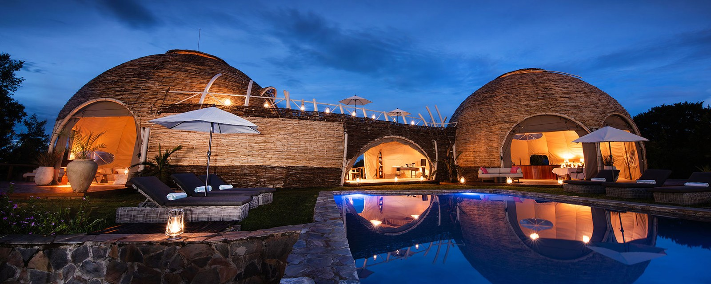

Photograph: Onyango George / EA Hospitality Pulse
The world's biggest travel market is going farther and paying less. East Africa built the opposite product.
Chinese travellers booked more than 1.28 million international flights for this Golden Week, trips now run past nine days, and more than half of those travellers will sleep in rooms costing under $149 a night. Kenya says it wants a million of them. In the Mara, since July, the gate alone costs $200 a day.
On Monday week, a China Southern Boeing 787-9 is scheduled to push back from Guangzhou Baiyun, call at Changsha, and land at Addis Ababa's Bole airport. It will do so twice a week thereafter. For a carrier that has flown to Africa for years, the 12 October launch is a modest piece of network housekeeping: a second African destination, two frequencies, one aircraft type. For East Africa it is the clearest signal yet of something the region has been waiting on since the borders reopened. The seats from China are arriving.
What they are supposed to carry is the question nobody in the region has answered.
This week, while that aircraft was still being slotted into October rosters, the market it serves was having its biggest moment of the year. China's National Day holiday, extended this year by an overlapping Mid-Autumn Festival into a stretch running from 25 September to 7 October, generated more than 1.28 million international flight bookings, up around 11 per cent on last year, according to analysis published by the consultancy China Trading Desk in early September. Trip.com Group, reporting its own booking data on 20 September, found multi-destination itineraries up 84 per cent year on year and hotel stays of seven nights or more up 123 per cent. The average Chinese outbound trip now runs past nine days.
Where those nine days are being spent is instructive. Trip.com's rising international destinations were Seoul, Busan, Jeju, Bali, Cebu, Phuket, Brussels and Athens. Seoul flight bookings rose 91 per cent, Cebu 111 per cent, Phuket 78 per cent. Among travellers aged 18 to 24, bookings to Queenstown were up 314 per cent and to Auckland 276 per cent. China Trading Desk's own destination ranking ran Bangkok, Tokyo, Osaka, Ho Chi Minh City, Jeju, Phnom Penh, Manila, Paris, Sydney, Milan.
No African city appears on either list.
That absence would be easy to read as a marketing problem, and East African tourism boards have been reading it that way for three years. The more uncomfortable reading is that it is a product problem, and the evidence for it sits in the same datasets.
A survey of 1,010 mainland Chinese travellers published by Dragon Trail Research on 23 September found that only 5 per cent of outbound travellers were looking for luxury hotels. More than half intended to book rooms under RMB 1,000 a night, roughly $149. Just over a third were in the RMB 500 to RMB 1,000 band, and a fifth below RMB 500. The most common total trip budget was RMB 10,000 to RMB 20,000, around $1,490 to $2,980 for the whole nine days.
Set that against what East Africa sells. Since 1 July, the peak-season conservation fee at the Masai Mara National Reserve has been $200 per non-resident adult per day, doubled by Narok County from $100. That is the gate, before a bed, a vehicle, a guide or a meal. The private conservancies that ring the reserve, Naboisho, Olare Motorogi, Mara North, fold their access fees into nightly rates that commonly start north of $650 per person.
The arithmetic is not subtle. A traveller with a total trip budget of RMB 15,000 cannot buy two nights in a Mara conservancy and still get home. The modal Chinese outbound traveller of 2026 could spend their entire accommodation budget for a nine-day trip on a single night in the product East Africa has spent a decade building and defending.
This is not an argument that the Chinese market is poor. China Trading Desk forecasts 179.3 million Chinese outbound trips in 2026 and around $257.6 billion of destination spending, an average of roughly $1,437 a trip, and has lifted its wider 2026 Chinese travel spending forecast to $295.9 billion. Twenty-two per cent of Dragon Trail's respondents budgeted above RMB 30,000, something over $4,470. Twenty-two per cent of a market this size is a very large number of people who can afford a conservancy.
It is an argument that East Africa has only one shelf, and it is stocked for the 22 per cent.
"The question is no longer whether demand is returning," Subramania Bhatt, founder and chief executive of China Trading Desk, has said of the 2026 outbound market. "It is who captures the spend." His second observation is the one that should worry Nairobi, Arusha and Kigali: "In 2026, the strongest opportunities will be in markets that are easy to reach, relevant for shopping, and visible to Chinese travellers before the trip is booked."
Easy to reach is where East Africa has made real progress and still loses. Aviation Week reported in July that two-way origin and destination traffic between China and Africa reached 2.93 million passengers in 2025, up 36 per cent from 2.15 million in 2024. Only about 525,000 of those, 17.9 per cent, flew nonstop. More than four in five Chinese travellers to Africa still connect, overwhelmingly through Gulf hubs, which means the itinerary is assembled by a carrier and an online agency with no particular interest in whether the African leg is three nights or none.
The nonstop picture is improving faster than the headline suggests. China Southern raised Guangzhou to Nairobi from four weekly to seven on 10 July, flying the 787-9, on top of three weekly via Changsha, and lifted its summer 2026 two-way African capacity by 51.5 per cent to around 159,000 seats. Across the whole market, nonstop China to Africa capacity for summer 2026 stood at 1.81 million seats over 22 airport pairs, with Guangzhou to Addis Ababa the single largest route. Ethiopian Airlines holds roughly 35 per cent of it.
Capacity, in other words, is not the binding constraint it was in 2023. Conversion is.
Visible before the trip is booked is the harder half of Bhatt's test, and it exposes a timing problem that has nothing to do with marketing spend. China Trading Desk found searches for this holiday period up 116 per cent by 24 August, with bookings made 30 or more days ahead rising 20 per cent year on year. That increase is treated in the Chinese market as a notable lengthening of lead time. East African safari inventory is sold on a different clock entirely, typically six months out and through a European or North American operator. A destination whose distribution is built to be shortlisted in April is structurally invisible to a traveller who starts searching in August and books in September, however good the campaign.
The comparison that should sting is the Gulf. Dragon Trail published a dedicated white paper on Chinese tourism to the Middle East and North Africa on 14 September, and a separate briefing on Chinese demand across the GCC nine days later. That is the research cadence of destinations treating China as a segment with its own economics. East Africa, for all the ministerial language about friendship and exchange, is still largely working from the assumption that the Chinese visitor is the European visitor with different signage.
There is also a demand base sitting unexploited. More than 60,000 Chinese nationals live in Kenya. They are resident, they are already inside the market, and they are the obvious first buyers of a domestic-priced weekend product, the people most likely to host visiting family, and the cheapest possible channel into Chinese social platforms. Almost nothing in the region's published China strategy addresses them.
Kenya has been explicit about its ambition. Chinese arrivals reached 105,000 in 2025, up from more than 90,000 in 2024 and 84,000 before the pandemic. Speaking in February, Tourism principal secretary John Ololtuaa framed the target in the language the region tends to use about China: "With China's huge population, even if we can get just one million Chinese visitors to Kenya, it will be very exciting."
June Chepkemei, chief executive of the Kenya Tourism Board, put the continental context in an interview with Xinhua later the same month. "Overall, in the year 2024, we saw about four million Chinese visiting the continent, and Kenya received about 100,000 of them," she said, adding: "Kenya is an all-year-round destination, and we are always prepared to receive our friends from China."
Prepared is doing a lot of work in that sentence. The constraints most often listed by Kenyan analysts, air connectivity, visa process, Mandarin-capable staff and acceptance of Chinese digital payment rails, are real and widely acknowledged. They are also, every one of them, service-layer problems. Fixing all four would make an East African holiday easier to buy without making it cheaper to buy, and price is the variable this market has moved on.
The broader numbers show why that matters. Kenya recorded 2.76 million international arrivals in the 2025/26 financial year, up 9.8 per cent, with earnings of KSh564 billion against a target of KSh529 billion. "The sustained growth demonstrates growing global confidence in Kenya as a preferred travel destination, with international arrivals increasing steadily from 1.21 million in 2021/22 to 2.76 million in 2025/26, more than doubling over the five-year period," said Rebecca Miano, cabinet secretary for tourism and wildlife, in August. Average expenditure per international visitor rose to KSh204,298.
That is a strong year, and it was delivered by source markets that buy the existing product. The risk in reading it as validation is that it encourages the region to take the one million Chinese visitors target and multiply the current product by ten, when the market being targeted is moving in the other direction: longer, more fragmented, more self-assembled, and more price-sensitive on the bed than on the experience.
There is a version of this that works, and it starts by separating the two things East Africa currently sells as one.
A nine-day multi-destination itinerary that includes Kenya does not need nine nights of safari. It needs two or three, and six or seven nights of something else: Nairobi, the coast, Zanzibar, Kigali, a transit night either side. Those nights are currently sold either by international chains with no China distribution or by independents with no distribution at all. They are the nights a RMB 800 a night budget can actually absorb, and they are the nights that make the two expensive ones affordable.
That implies specific, unglamorous work. Publishing a room-only rate alongside the full-board one, so a lodge can appear in a comparison set at all. Contracting with the Chinese platforms where a nine-day multi-stop trip is assembled, rather than waiting for a European tour operator to carry the booking. Pricing the second and third night differently from the first. Treating the shoulder months, when the Mara gate drops back to $100, as the Chinese season rather than the discount season.
None of that requires a Mandarin-speaking guide, though one helps. It requires accepting that the first Chinese guest through the door will probably not be the conservancy guest, and that the conservancy guest arrives later, on the second trip, having been sold the country on the first.
The 787 lands at Bole on Monday week. The capacity question has been answered for this cycle. The product question has not been asked.
📣 Telegram 💬 WhatsApp 💼 LinkedIn 📚 All guides